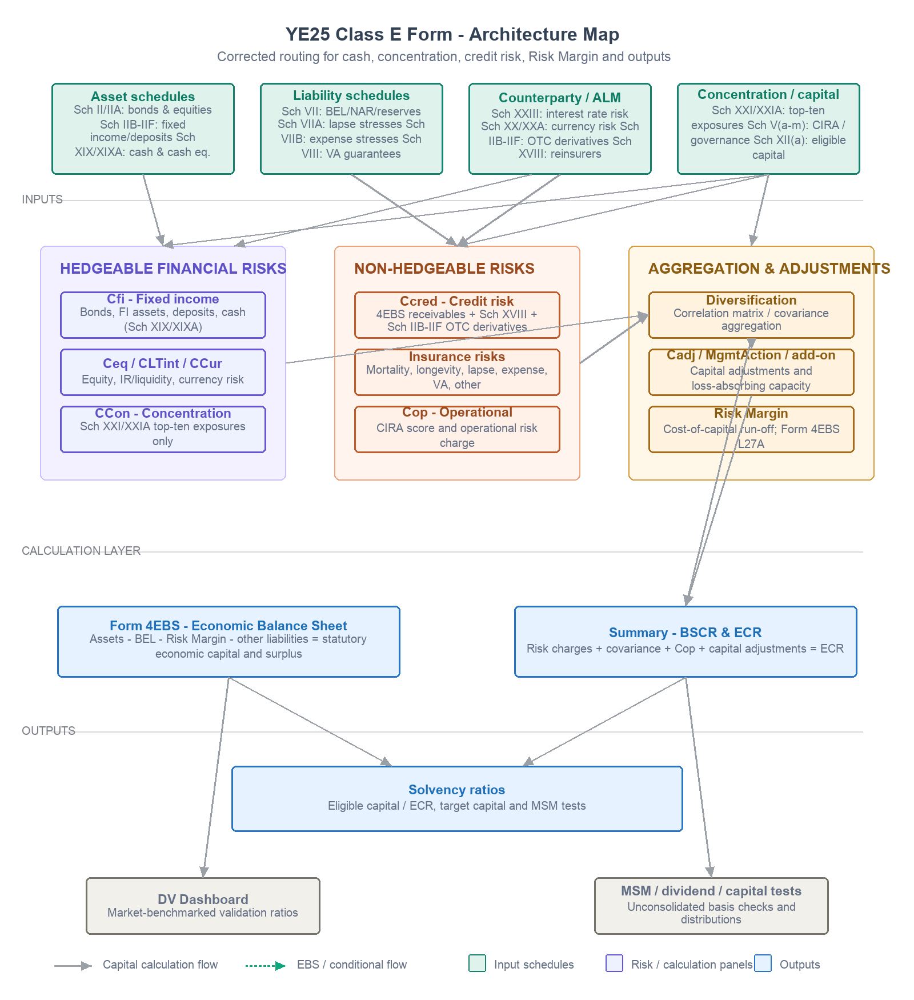

Scope note: This article assumes a standard life insurer with no variable annuity materiality unless otherwise noted. Specific treatments for captive reinsurers, pure reinsurers, or firms under transitional arrangements may differ. Readers should consult the latest BMA guidance for their specific circumstances.
| A finance manager once rushed over mid-reporting cycle: the BSCR ratings on the top ten cash holdings had been entered incorrectly. Did it matter? How much? Without a clear map of how information flows through the Class E form, that question has no quick answer. |
|---|
The answer is contained entirely in the architecture. Under the YE25 BSCR framework, cash and cash equivalents reported in Schedule XIX/XIXA primarily drive Fixed Income Investment Risk (Cfi) through BSCR ratings. They may also affect concentration risk if one or more cash counterparties appear in the top-ten concentration schedules, Schedule XXI/XXIA. They do not normally generate a separate counterparty default charge within the Credit Risk module. The correction therefore changes the capital requirement, but it would not normally refresh the Risk Margin or EBS surplus. The solvency ratio changes from one direction only.
That diagnostic took about ten seconds. It would have taken considerably longer without a mental map of where each piece of data goes and what it is connected to.
This article builds that map explicitly, based on the actual YE25 Class E BSCR form. It is organised in three layers — inputs, calculations, and outputs — and ends with a preview of the most common points of failure, which are covered in Part II.
Why the form resists intuition
The Class E form is not a single calculation. It is closer to a set of interlocking models that happen to share a reporting template. Assets are valued on an Economic Balance Sheet basis, not GAAP. Liabilities are discounted using BMA-prescribed risk-free curves. The capital requirement is built from risk charges across multiple categories, adjusted for diversification, with further adjustments for management actions and non-insurance regulated entities. Each step draws from a different schedule, and several schedules feed more than one output simultaneously.
Schedule numbers do not correspond to the order in which things should be computed. The dependencies between schedules are not shown anywhere in the template itself. A practitioner working through the form — even one who has done it before — often discovers a linkage only after seeing the consequences of an error.
Two features of the architecture are particularly disorienting. First, the EBS balance sheet and the BSCR capital requirement are calculated in parallel, not in sequence. Changes to the same underlying data can move both simultaneously and in directions that partially cancel. Second, the Risk Margin, which sits on the liability side of the EBS, has no direct connection to hedgeable financial risk charges. Under the YE25 framework, changes to non-hedgeable risk drivers – Ccred (excluding credit risk on listed fixed income securities that can be hedged in active markets), insurance risks, or operational risk - may require a Risk Margin refresh; a change to fixed income, concentration, or currency risk normally does not. As a simplifying convention, this article groups operational risk with non-hedgeable risk drivers when discussing Risk Margin sensitivity, although its mechanics differ from insurance liability run-off risks. Knowing which side of this boundary a change falls on is the first diagnostic question.
The architecture map below is designed to make both features visible before you start filling in cells.
Quick Index
| If you want to know... | Go to... |
|---|---|
| Which asset goes to which risk module | Layer one tables (Asset data inputs) |
| Which risk charge is driven by which schedule | Layer two table (Risk charge calculation sheets) |
| What happens when a specific data point is wrong | Layer one tables (Error impact column) |
| How the EBS and BSCR interact | The dual-effect problem section |
| What the regulator looks at first | DV Dashboard section |
The three-layer architecture
The YE25 Class E form contains 133 worksheets. The ones that matter for understanding information flow fall into three layers: data input schedules, risk charge calculation worksheets, and outputs. The diagram below shows the complete picture, followed by detailed mapping tables for each layer.
Figure 1 — YE25 Class E form: three-layer architecture. Teal = input schedules; purple = risk charge calculation sheets; coral = concentration, credit and operational risk; blue = outputs. Green dashed arrows show EBS balance sheet flows; grey arrows show capital calculation flows.

Layer one — data input schedules
The input layer is where raw data enters the form. It divides into asset-side and liability-side inputs, with Schedule XVIII sitting across both because it captures reinsurance counterparty exposure that affects credit risk as well as the net EBS liability position.
Asset data inputs
| Schedule | Content | Feeds into (calc sheet) | Error impact |
|---|---|---|---|
| Sch II (EBS) + IIA (EBS) | All bonds and equities by BSCR rating 0–8, including funds in segregated accounts | Fixed Income Investments (Cfi), Equity Investments (Ceq), Form 4EBS | Rating error changes the capital factor and rating-bucket allocation; total EBS asset value may still reconcile, which makes the error harder to detect |
| Sch IIB (EBS) | Bonds, RMBS, CMBS/ABS, bond funds, mortgage loans by BSCR rating on EBS basis | Fixed Income Investments (Cfi); Form 4EBS lines 2(b) and 3(b) | Investment Reconciliation cross-check flags mismatches with Form 4EBS automatically |
| Sch IID / IIE / IIF (EBS) | Segregated accounts (IID), deposit assets (IIE), sundry assets (IIF) | Form 4EBS lines 77–84; Investment Reconciliation look-through | Omission understates EBS asset total; sundry assets test LT_5_2 will fail |
| Sch XII(a) (EBS) | Eligible capital: Tier 1 and Tier 2 breakdown, encumbered asset deductions | Solvency ratio numerator; DV ratio LT_1_3 (Tier 1 percentage) | Encumbered assets not deducted → eligible capital overstated → solvency ratio inflated |
| Sch VI family | Granular asset disclosure; security-level BSCR rating, face value, fair value. | Cross-check vs Sch II / IIB; consistency check LT_3_7 | Must reconcile to Form 1SFS and Form 4EBS totals; Sch VI (Check) provides an additional internal asset-schedule tie-out |
| Sch XIX / XIXA | Cash and cash equivalent counterparty balances by BSCR rating, including top cash exposures and remaining balances by rating bucket | Fixed Income Investments (Cfi); possible concentration impact only if the counterparty also appears in Sch XXI/XXIA | Wrong or missing BSCR ratings change Cfi. If a cash counterparty enters the top-ten concentration list, it may separately affect CCon; otherwise there is normally no separate Ccred impact under the YE25 framework. Exception: if the same counterparty is also a reinsurer or OTC derivative counterparty with a separate credit exposure, that separate exposure may generate a Ccred charge. The cash itself does not. |
Liability data inputs
| Schedule | Content | Feeds into | Error impact |
|---|---|---|---|
| Sch VII (EBS) | EBS BEL by product: mortality, critical illness, longevity (age-banded), disability. BBNI, SBA BEL, and transitional BEL columns. Links to Form 4EBS note lines 27(d)(i–vii) | LT Insurance Risk calc (NAR-based and BEL-based charges); Lapse Risk base; Form 4EBS liability | Dual impact: BEL error moves both EBS surplus and insurance risk capital simultaneously |
| Sch VIII (EBS) | Variable annuity guarantee BEL only — GMDB, GMIB — bucketed by fund volatility: 0–10%, 10–15%, above 15% | LT Variable Annuity Gte Risk (CLTVA); Form 4EBS | Wrong volatility bucket changes capital factor materially; blank for firms with no VA book |
| Sch VIIA (EBS) | Lapse stress results: lapse-up, lapse-down, and mass lapse by market. Pre- and post-stress assets and liabilities with and without management actions | Lapse Risk calc sheet → CLTLapse in Summary | Three distinct shocks; worst-case taken. Mass lapse floor applies; retail and non-retail treated differently |
| Sch VIIB (EBS) | Expense stress: per-region pre- and post-stress liabilities with relative and absolute inflation shocks | Expense Risk calc sheet → CLTExps in Summary | Duration-dependent inflation assumption; often underestimated for long-tail books |
| Risk Margin Info | Risk Margin estimated using 24YE BSCR rules — cost-of-capital run-off projection of non-hedgeable risks | Form 4EBS line 27A — EBS liability total only | Affects EBS surplus only, not BSCR directly. Non-hedgeable risk-driver changes (including credit risk from reinsurance counterparty default, but excluding credit risk on listed fixed income securities that can be hedged) may require RM refresh; hedgeable market and concentration risk changes normally do not |
Reinsurance, counterparty, and concentration
| Schedule | Content | Feeds into | Classic error |
|---|---|---|---|
| Sch XVIII (EBS) | Top 10 reinsurers: BSCR rating, RI assets per Form 4EBS lines 11(e)/12(c)/27(c), RI payable, collateral, qualifying collateral, net qualifying exposure | Credit Risk calc sheet (Ccred) — counterparty default charge | Wrong reinsurer BSCR rating changes credit charge. Qualifying collateral column frequently left at zero, forfeiting all credit risk reduction |
| Sch XXI / XXIA | Top 10 single-name / counterparty exposures on unconsolidated and EBS basis, including BSCR rating and asset value | Concentration Risk calc sheet (CCon) - sensitive above the applicable regulatory thresholds | Rating errors can become highly sensitive once exposures exceed the applicable regulatory thresholds. Cash counterparties affect this only if they enter the Sch XXI/XXIA top-ten set |
ALM, currency, and risk management
| Schedule | Content | Feeds into | Note |
|---|---|---|---|
| Sch XXIII | Interest rate sensitive assets and liabilities: down-shock by currency, before and after shock, derivative exposures qualifying vs non-qualifying | Interest Rate-Liquidity Risk (CLTint) — 200bp shock with duration mismatch ALM credit | Good asset-liability matching is rewarded: the ALM credit reduces CLTint directly |
| Sch XX / XXA | Currency risk: assets and liabilities by currency before and after shock, hedging arrangements | Currency Risk calc (CCur) — 25% shock on unhedged net position | Hedging column frequently left blank, overstating CCur for firms with natural currency matches |
| Sch V(a)–V(m) | Risk management sub-schedules: governance (Va), counterparties and intra-group (Vc), stress tests (Ve), stat-to-EBS reconciliation (Vg) | Op Risk CIRA score → Cop capital charge; DV Dashboard compliance checks | CIRA responses are capital-generating inputs. Leaving them blank causes the operational risk charge to reach its regulatory cap |
Layer two — risk charge calculation worksheets
The calculation layer consists of named worksheets that apply capital factors to the input data and produce individual risk charges. These are not embedded within the schedule tabs — they are standalone calculation sheets that feed the Summary. The table below lists every material risk charge in the YE25 Summary, its worksheet, and its primary source.
| Risk charge (code) | Calculation sheet | Primary input | Key design point |
|---|---|---|---|
| Fixed income risk (Cfi) | Fixed Income Investments | Sch II / IIA / IIB-IIF as applicable for fixed income exposures; Sch XIX/XIXA for cash and cash equivalents by BSCR rating | Capital factors range from 0% (BSCR 0) to 35% (BSCR 8). Rating is the single most leveraged input on the asset side |
| Equity risk (Ceq) | Equity Investments | Sch II (EBS): equities, grandfathered and non-grandfathered split | Grandfathered equities carry reduced factors. Misclassification is binary and documentation-dependent |
| Interest rate / liquidity risk (CLTint) | Interest Rate-Liquidity Risk | Sch V: Duration-Based Approach Sch XXIII: Shock-Based Approach | Duration-Based approach. ALM credit reduces the charge when asset and liability durations are well matched |
| Currency risk (CCur) | Currency Risk | Sch XX / XXA: net positions by currency after hedges | 25% shock on unhedged net. Natural hedges must be reflected explicitly; the schedule does not assume them |
| Concentration risk (CCon) | Concentration Risk | Sch XXI / XXIA: top 10 single-name exposures | Concentration capital becomes highly sensitive once exposures exceed the applicable regulatory thresholds. Rating or exposure errors near those thresholds can have a disproportionate impact |
| Credit risk (Ccred) | Credit Risk | Receivables / other receivables from Form 4EBS or statutory source lines; reinsurance balances and recoverables from Sch XVIII; OTC derivatives from Sch IIB-IIF | Reinsurance collateral and qualifying exposure fields drive net exposure. Under the YE25 framework, cash in Schedule XIX/XIXA does not normally generate a separate Ccred charge. Exception: OTC derivative counterparty default risk is captured separately via CCROTC/OTC derivative credit calculation. |
| Mortality / longevity / disability (CLTmort etc.) | LT Insurance Risk | Sch VII (EBS): NAR by tier, BEL by product and age band | Five sub-charges aggregated here. NAR-based for mortality/CI, BEL-based for longevity/disability |
| Lapse risk (CLTLapse) | Lapse Risk | Sch VIIA (EBS): three shocks, worst-case applied | Lapse-up, lapse-down, mass lapse. Floor applies. Retail and non-retail treated differently |
| Expense risk (CLTExps) | Expense Risk | Sch VIIB (EBS): per-region inflation stress | Relative and absolute inflation shock. Duration-dependent calibration |
| VA guarantee risk (CLTVA) | LT Variable Annuity Gte Risk | Sch VIII (EBS): guarantee BEL by volatility bucket | Three volatility buckets. Blank for firms without VA books |
| Operational risk (Cop) | Op Risk (Revised) | Sch V(a)–V(m) CIRA score; asset base from Summary | CIRA score is a qualitative multiplier. Blank responses maximise the charge |
Layer three — outputs
The output layer has three components produced simultaneously from the same underlying data. A single input error can affect all three at once.
Form 4EBS — the economic balance sheet
Assets (lines 1–15) minus BEL (line 27d) minus Risk Margin (line 27A) minus Other liabilities (line 38) equals Statutory economic capital and surplus (line 40). Line 40 is the starting point for Schedule XII(a), which derives eligible capital after Tier 1 and Tier 2 classifications and deductions for encumbered assets. The solvency ratio numerator is eligible capital, not line 40 itself.
Summary — BSCR and ECR
The Summary aggregates all risk charges into the BSCR before and after the covariance adjustment using the 2024 YE correlation matrix. It then applies operational risk and capital adjustments, including Cadj and management action / loss-absorbing capacity items according to the model sign convention, to produce the final BSCRLT / ECR measure. The Summary maintains parallel calculations for the 2018, 2019, and 2024 year-end methodologies during the transitional period.
DV Dashboard — the regulator's view
The Data Validation Dashboard scores submissions against the Bermuda Class E market on approximately thirty named ratios. Three deserve particular attention because they benchmark your numbers against the full population:
LT_1_10 — diversified BSCR divided by undiversified BSCR. An outlier ratio suggests unusual risk concentration or correlation and attracts supervisory attention.
LT_3_8 — proportion of bonds in BSCR rating buckets 0–4. Benchmarked against all 2024 submissions, a low proportion indicates a portfolio weighted toward lower-quality assets.
LT_4_1 and LT_4_2 — duration gap: asset duration minus liability duration. Read directly by the regulator. An unexplained year-on-year swing will prompt questions in the supervisory review cycle.
Filing a technically correct form that scores as a market outlier on the dashboard is not the same as filing well. The DV Dashboard is the regulator's first filter.
The dual-effect problem
The architecture contains several schedules where a single input error moves both the numerator and denominator of the solvency ratio in the same direction. These are the most dangerous errors in the form because a high-level directional check will not catch them.
Schedule VII (EBS) is the clearest example. The BEL in Schedule VII feeds Form 4EBS as a liability, reducing available capital. The same figure feeds the LT Insurance Risk calculation as the base for multiple charges. An understated BEL reduces the liability — raising the numerator — and reduces the risk charges — lowering the denominator. The solvency ratio moves upward. The error produces a more favourable result and survives a surface-level review precisely because everything looks internally consistent.
Schedule XVIII can have the same dual-effect property for reinsurance-heavy books: an error in reinsurance balances or qualifying exposure can affect the EBS asset/liability position and the reinsurance counterparty component of Ccred at the same time. The direction depends on which balance is misstated.
The Risk Margin has the opposite characteristic: it is one-sided when viewed as a balance sheet item. It sits only in Form 4EBS as a liability at line 27A and does not directly feed any BSCR risk charge. A Risk Margin balance error therefore moves the solvency ratio from one direction only. This is why a change to a hedgeable market risk charge - like the cash holdings rating in the opening example - has no effect on the Risk Margin, while a change to an underlying non-hedgeable risk driver such as credit (excluding credit risk on listed fixed income securities), mortality, lapse, expense, or operational risk may require recalculating both the BSCR and the Risk Margin and refreshing Form 4EBS, depending on the reporting cycle and materiality approach.
When a result improves unexpectedly, the first question should be: which schedule changed, and how many outputs does it touch?
Risk impact summary
| Risk type | Affects BSCR? | Affects Risk Margin? | Affects EBS surplus? |
|---|---|---|---|
| Hedgeable market risk (Cfi, Ceq, CCur, CCon) | Yes | Normally no | No (unless asset valuation changes) |
| Non-hedgeable risk (Ccred*, insurance risks, operational risk) | Yes | Yes (may require refresh) | Yes (via BEL or RM) |
*Ccred from reinsurance counterparty default affects RM; credit risk on listed fixed income securities that can be hedged does not.
What comes next
The architecture map in this article is a diagnostic tool. It tells you where information comes from, where it goes, and what happens when a connection breaks. But knowing the architecture and operating it cleanly are different things.
In Part II, planned for August, we work through the ten most common points of failure in the Class E filing cycle — the places where the architecture breaks down in practice, and what the consequences look like. The traps range from data synchronisation failures (Schedule XXI's top-ten list not auto-linked to portfolio changes) to structural misunderstandings (derivatives invisible to concentration and currency schedules) to calculation framework errors (correlation matrix switched between transitional and new basis).
Each trap is described in terms of how the architecture break occurs, why it is hard to detect, and what a targeted audit looks like. The combination of Part I and Part II is intended to give a practitioner both the map and the places on that map where the road most often washes out.
Part II — The Ten Traps — is planned for August 2026. It will cover the full list of architecture failures drawn from the YE25 filing cycle, combining operational experience with a line-by-line reading of the actual BSCR model.
About the author
Chen Liu is a Fellow of the Institute and Faculty of Actuaries with over twenty years of experience in life insurance, reinsurance, and regulatory reporting across the UK, Hong Kong, and Bermuda. This article draws on direct experience completing the BMA Class E annual return for YE25.